前言
第3天课堂笔记
讲师：邵山欢
日期：2017年11月6日
复习
先说一下，工作的时候关于nodejs有两种情况：
直接找关于nodejs的工作，此时99%是在写HTTP业务。不会让你去写nodejs内核。
现在企业需要的人就是能够加班、有超强学习能力。刚刚过去的两天，Vue出了2.5、Angular出了5。
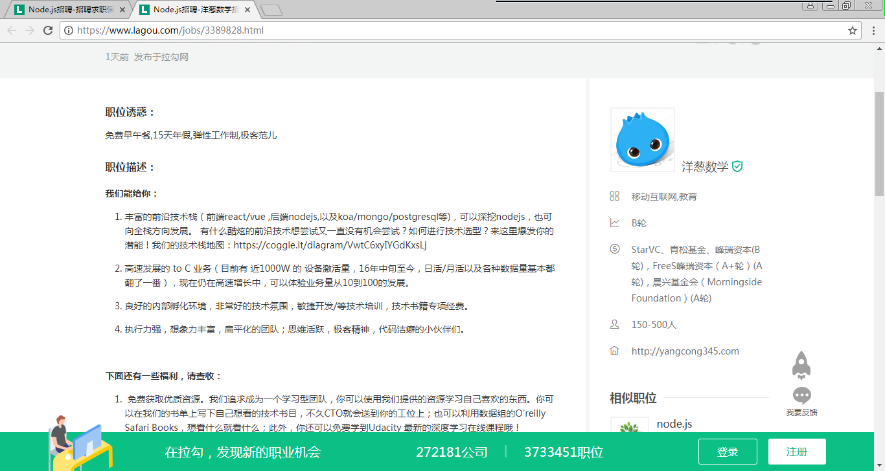
在开发vue（40%市场份额）、react（60%市场份额）的时候，使用nodejs的工作流工作，比如gulp、grunt、yeoman、webpack等等。最常见的，就是用nodejs做路由层。
项目的后台现在80%以上仍然是PHP、ASP、JSP，因为nodejs是单线程的脚本程序，无法撼动老牌后台服务器语言的。PHP、ASP、JSP是绝对不会找前端去写接口的。
复习一些知识点：
- nodejs不是一个语言，是一个平台。js是语言。和PHP + Apache不同，nodejs即是语言的承接平台又是提供http服务的平台。
- nodejs的安装，跨操作系统的，我们写的代码在任何的操作系统中都能运行。但是要装不同的nodejs环境。
nodejs没有根目录，得用http和fs共同配合做顶层路由设计，在原生的开发中，通常用：
1
2
3
4
5
6
7var server = http.createServer(function(req,res){
if(req.url == ""){
}else if(req.url == ""){
}
});npm要会用，模块的使用。
Express简化了http程序的开发：
1
2
3
4
5
6
7
8var express = require("exprss");
var app = express();
app.get("/" , function(req,res){
res.send("<h1>你好</h1>")
});
app.listen(3000);GET请求和POST请求
1
2
3
4
5
6
7
8
9
10
11app.get("/" , function(req,res){
var id = url.parse(req.url , true).query.id;
res.send("<h1>你好</h1>");
});
app.post("/" , function(req,res){
var form = new formidable.IncomingForm();
form.parse(req , function(err , fields , files){
});
});params：
1
2
3
4app.get("/:xuehao" , function(req,res){
var xuehao = req.params.xuehao;
res.send("<h1>你好</h1>");
});
二、TodoList的深入学习
2.1 复习
我们有了db.js这个模拟数据库之后，接下来写了一个todo.js的文件，里面有4个函数是操作db.js的。
此时我们说db.js文件是可被预测状态的（predictable）。
说A文件可被预测状态：
清晰性：对A文件的所有操作，都罗列出函数了；
私有性：对A对象的操作，必须通过这些函数；
灵活性：对A的操作可以任意插拔，删除一个函数就去掉了一种操作，增加一个函数就增加一个操作。
nodejs中的所有的关于文件的操作，都是异步的。比如：
1 | fs.readFile(); |
所以他们都提供了回调函数：
1 | fs.write(filepath , function(err , data){ |
如果再把这个异步函数封装成一个函数，外层函数要接受一个callback回调函数，当fs的readFile执行完毕之后，调用callback通过实参将data传出去。
1 | function read(callback){ |
RESTful接口：
| 功能 | URL地址 | 请求 |
|---|---|---|
| 增加TodO | /todo | POST |
| 列出TODO | /todo | GET |
| 更改TODO顺序 | /todo | MOVE |
| 删除TODO | /todo/id号 | DELETE |
| 更改TODO | /todo/id号 | PATCH |
我们将app.js中的中间件的function(req,res)都挪出去：
1 | var express = require("express"); |
控制器controllers/mainctrl.js:
1 | var formidable = require("formidable"); |
2.2 MVC架构
MVC、MVVM不是设计模式，而是代码的架构模式。
设计模式比如中介者模式、发布订阅模式、装饰器模式等等，他们解决的是偶尔性问题，类和类中间怎么一起工作；
代码的架构模式是编程的时候文件的组织的模式。
MVC全名是Model View Controller，是模型(model)－视图(view)－控制器(controller)的缩写。
Model（模型）是应用程序中用于处理应用程序数据逻辑的部分。通常模型对象负责在数据库中存取数据。
View（视图）是应用程序中处理数据显示的部分。通常视图是依据模型数据创建的。
Controller（控制器）是应用程序中处理用户交互的部分。通常控制器负责从视图读取数据，控制用户输入，并向模型发送数据。
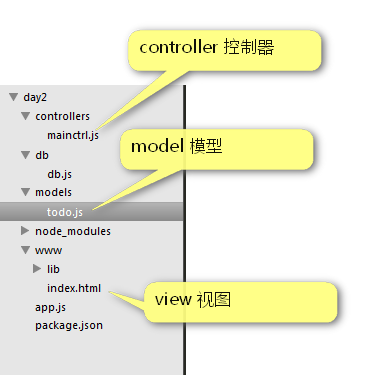
MVC的一个图示：
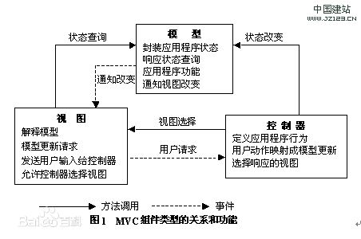
三、MongoDB
3.1 NoSQL简介
之前学习的是SQL（structure query language ， 结构化查询语言）。SQL数据库有一个最大特点：限制每一个字段的类型。
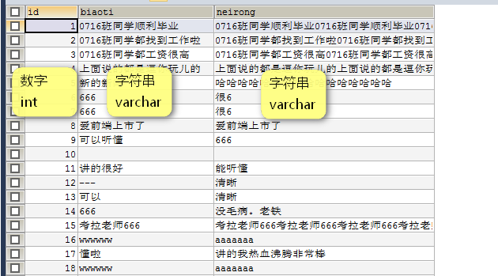
比如id现在是数字类型，但是突然间国家开放成人本科，此时学校说学号要以CR打头，你就傻了，因为id必须是数字。现在我们要修改字段类型，时间耗费很多，因为所有已经存在的条目要跟着一起修改。如果要增加列，更是灾难，因为所有已经存在的条目都要跟着一起修改。
NoSQL（非结构化数据库，Not Only SQL）应运而生。
下面的数据就是合法的4条NoSQL数据：
1 | {"id":10001 , "name":"小明" , "age" : 12 , "sex" : "男"} |
每个字段都不限制类型，id可以是数字，然后突然间变为字符串是合法的；也可以增加字段。
| 优点 | 缺点 | |
|---|---|---|
| SQL | 适合复杂的查找、查询很迅速 | 限制了字段的类型、表格一旦确定不容易更改表格的形态。 |
| NoSQL | 不限制字段类型，数据条目每一条都可以有不同的字段，便于修改表格的形态。 | 不适合复杂的查找、查询不迅速 |
3.2 MongoDB数据库的安装
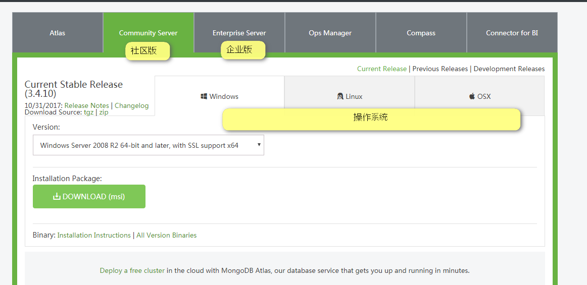
下载之后：
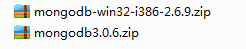
注意系统是64位的同学，学习mongodb3.0.6，32位的同学只能安装2代。
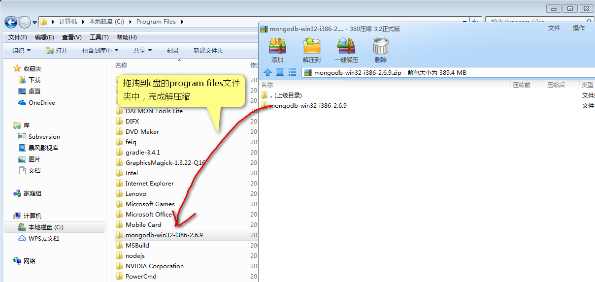
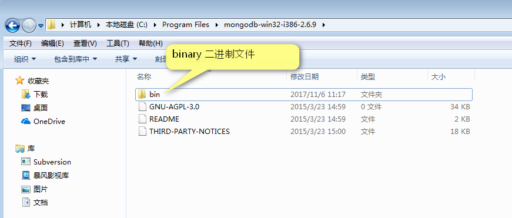
现在要把bin这个文件夹设置为系统的环境变量。
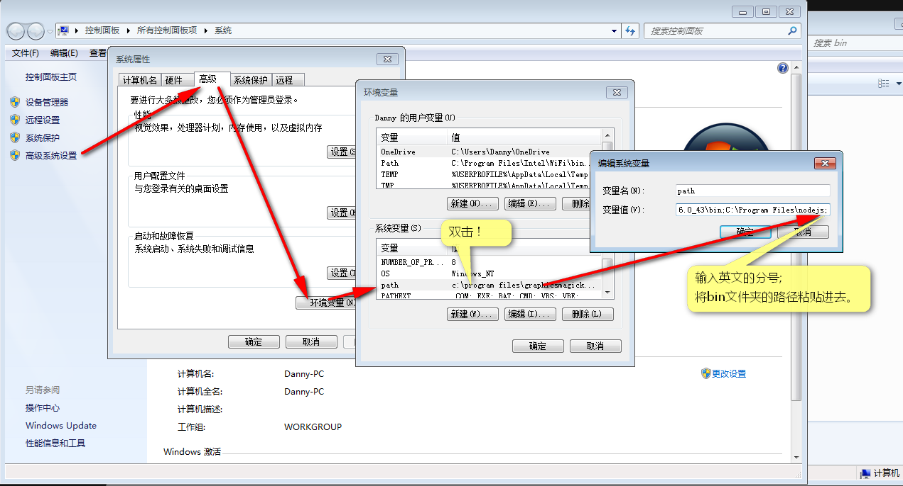
一路确定之后，就可以打开CMD：
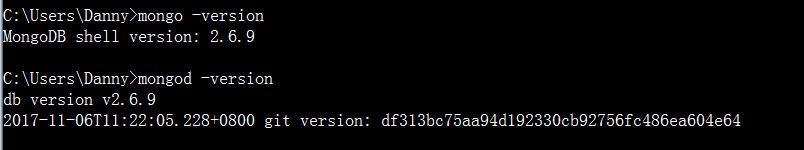
输入：
1 | mongo -version |
可以查看mongo数据库的版本号了，说明安装成功。
3.3 数据库的开机mongod
开启数据库我们称作”开机”。
首先需要在c盘创建一个database文件夹。然后打开CMD输入：
1 | mongod --dbpath c:\database |
mongod负责开机。读作”芒果第”。
--dbpath表示设置数据库的存放目录。
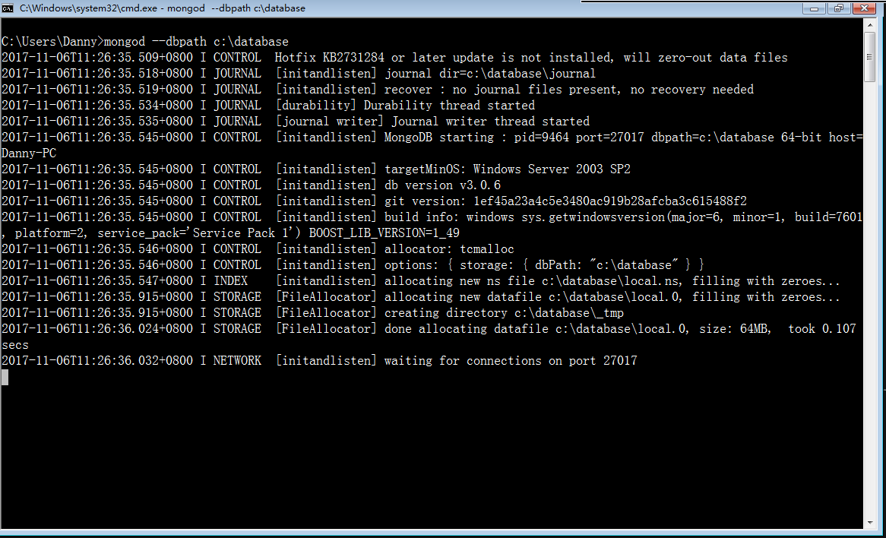
如果能够在CMD的最后一行看见：waiting for connections on port 27017
说明开机成功。
注意，必须事先安装了windows补丁KB2731284，如果没有安装这个补丁，数据库将开机失败。
怎么知道自己是不是安装了这个补丁呢？
1 | systeminfo |
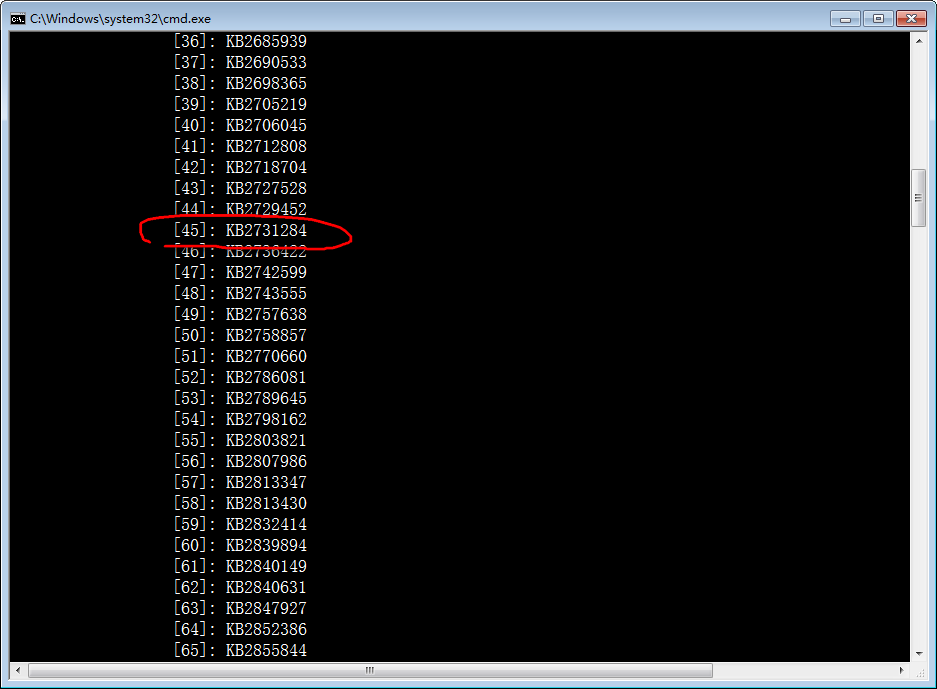
如果就是跑不成功，此时尝试用管理员模式打开CMD：
如果还是开不了，就换为2.0.6版本即可。
3.4 简单的数据库操作mongo
MongoDB有可视化管理软件，叫做MongoBooster，前期我们先用CMD来管理。
使用数据库之前要先用mongod开机，然后此CMD不能关闭，再次打开一个窗口，用mongo命令进入REPL环境。
bin文件夹中两个工具：
| 工具名字 | 负责的事情 |
|---|---|
| mongod.exe | 负责开机 |
| mongo.exe | 负责管理数据库 |
| mongoimport.exe | 负责导入数据 |
| mongoexport.exe | 负责导出数据 |
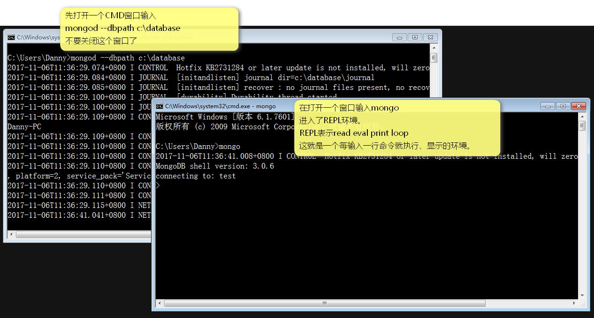
数据库用use来创建，比如创建一个学生管理数据库：
1 | > use xsgl |
这个叫做使用数据库，只不过当这个数据库不存在的时候，系统自动帮你创建。
创建完数据库之后，要创建一个”表格”叫做banji0716，”表格”在MongoDB中称为”集合”。
集合不用刻意创建，只需要在集合中插入一条数据，集合自动创建。
插入数据的语法：
1 | > db.banji0716.insert({"id":10001,"name":"小明","age":12,"sex":"男"}); |
数据库中的数据就是JSON。
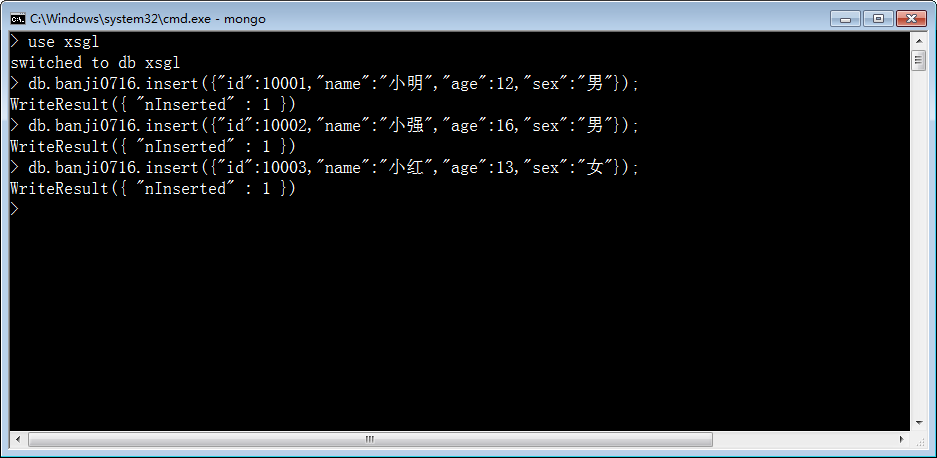
查看集合中的全部数据，用
1 | > db.banji0716.find() |
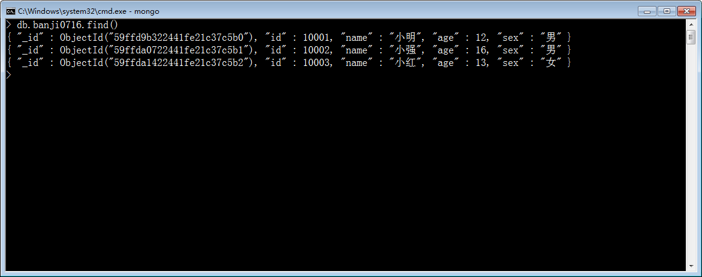
查看0716班所有男生：
1 | > db.banji0716.find({"sex":"男"}); |
查看0716班所有大于15岁的男生：
1 | > db.banji0716.find({"sex":"男" , "age" : {"$gt" : 15}}); |
查看0716班所有大于15岁的男生或者小于17岁的女生：
1 | > db.banji0716.find({"$or" : [{"sex":"男","age":{"$gt":15}},{"sex":"女","age":{"$lt":17}}]}); |
也就是说NoSQL的CRUD（增删改查）操作，一律不使用SQL。
原来的SQL现在不用了：
1 | SELECT * FROM banji0716 WHERE (sex = "男" AND age > 13) OR (sex = "女" AND age < 17) |
查看已经有的数据库
1 | > show dbs |
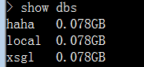
需要注意的是：数据库中必须有一条数据之后，才能被创建。
删除数据库（实现要use 一个数据库）
1 | > db.dropDatabase() |
查看已有集合：
1 | > show collections |
删除集合：
1 | > db.banji0716.drop() |
删除一个条目：
1 | > db.banji0716.remove({"id":"CR10001"}) |
3.5 数据的导入(mongoimport)和导出(mongoexport)
先开机，但是不要进入REPL环境！
数据导入：
在桌面上准备一个数据.txt
1 | {"id":10001 , "name":"小明" , "age" : 12 , "sex" : "男"} |
使用CMD命令：
1 | mongoimport -d xsgl -c banji0716 C:\Users\Danny\Desktop\数据.txt --drop |
-d表示选择database数据库
-c表示选择collection集合（表）
--drop表示删除这个集合中已经有的数据
导出数据：
1 | mongoexport -d xsgl -c banji0716 -o c:\beifen.txt |
3.6 使用mongobooster可视化数据库管理软件
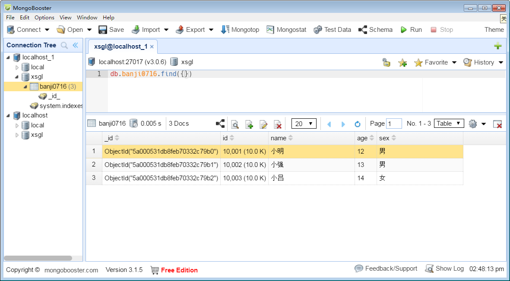
四、NodeJS操作MongoDB（非重点）
因为一会儿我们就要讲解Mongoose，将颠覆这里的知识。
4.1 连接数据库
安装依赖
1 | cnpm install --save mongodb |
用mongod开启数据库之后，写app.js:
1 | var MongoClient = require('mongodb').MongoClient; |
运行node app.js即可。
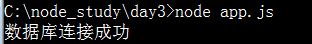
4.2 查询和增加操作
1 | var MongoClient = require('mongodb').MongoClient; |
原生nodejs操作mongodb问题很多：
语法形式上大的回调函数太大了，要包裹所有的代码，甚至要包裹express的中间件；
不利于MVC编程，我们几乎不能将所有对数据库的操作封装到一个文件中。
五、Mongoose
Mongoose简化了nodejs对nodejs的操作。
mongoose是nodejs中的model那个文件。
5.1 基本使用
安装
1 | cnpm install --save mongoose |
两步走：
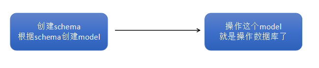
我们首先创建一个models的文件夹，创建一个Student.js的构造函数：
1 | var mongoose = require("mongoose"); |
然后创建app.js:
1 | var mongoose = require('mongoose'); |
集合就是students，会被自动加上复数s：
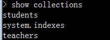
你创建model的时候：
1 | var Student = mongoose.model("Student" , studentSchema); |
它将会自动将开头字母变为小心，末尾加s作为集合名字。
5.2 增
注意，mongoose牛逼之处在于，schema、model一旦写好了，再也不用改！
方法1：（实例化，然后save）
1 | var xiaohong = new Student({ |
方法2：（直接调用create）
1 | Student.create({ |
5.3 删
方法1（先找到这个人，然后remove）：
1 | Student.find({"xingming" : "小红"} , function(err , results){ |
方法2（直接remove）：
1 | Student.remove({"xingming" : "小花"} , (err)=>{ |
5.4 改
方法1（找到，改了，然后save）
1 | Student.find({"xingming" : "小明"} , function(err , results){ |
方法2（直接改）：
1 | Student.update({"xingming" : "小明"} , {"$set" : {"age" : 99}} , function(err){ |
语法：
1 | Student.update(改变谁 , {"$set" : 怎么改} , function(err){ |
5.5 查
1 | Student.find({"xingming" : "小红"} , function(err , results){ |
六、Mongoose小案例 - 小小调查问卷表单
我们设计三个题目：
【单选题】双十一你最期待的事情：商场打折、淘宝购物节、单身狗过节啦
【多选题】双十一你想买的东西：零食、衣服、电子产品、美容产品
【数字题】你预算花费：range条，10块 ~ 20000块
我们现在从前端、nodejs服务端、数据库，都是JavaScript语境！数据库也是JOSN！所以数组不会变形！
统计集合中有多少数据：
1 | > db.surveys.count() |
存储数据库特别简单：
1 | //中间件 |